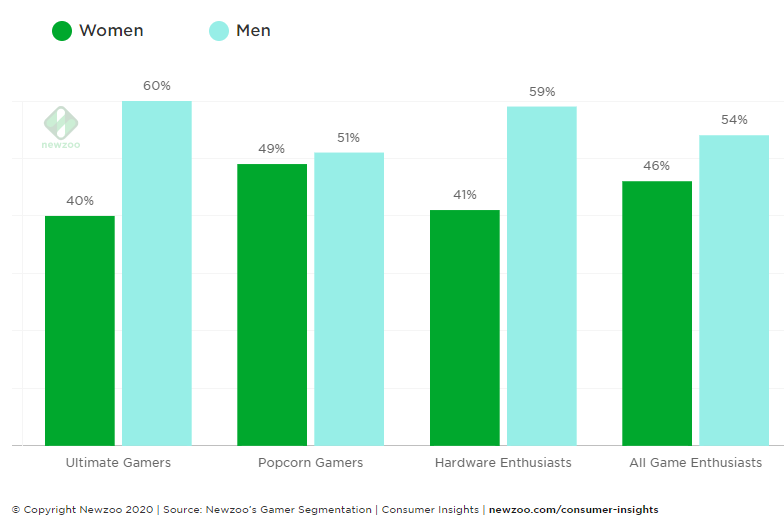

Girl Gamer Power
Creste numarul femeilor in lumea jocurilor video
Newzoo, unu din cele mai mari companii de statistica a publicat in 2020 un raport ce arata ca aproape jumatate din gamerii internationali sunt femei. Termenul de gamer se schimba si el incet, spre exemplu cei care urmaresc pe altii (streameri) cum joaca sau urmaresc video-uri pe youtube despre jocuri sunt o noua categorie de gameri ce au aparut abia acum cativa ani. Acestia au primit si un nume destul de interesant, intitulati Popcorn Gamers.
Termenul de gamer nu mai este ce a fost o data unde un gamer putea fi catalogat gamer daca petrecea foarte mult timp jucand jocuri video. La ora actuala exista gameri care se joaca putin dar le plac foarte mult partea de hardware, unde nu cantitatea ii intereseaza in jocuri ci doresc cea mai mare rezolutie (4K sau 8K) si cea mai realistica experienta, investind foarte multi bani in componente PC sau cumparand tot timpul console noi aparute, uneori chiar facand pre-comanda. Dar in acelasi timp exista gameri care joaca jocuri simple pe telefonul mobil si le place sa urmeasca streameri pe twitch.tv sau youtube. In cea de-a doua categorie, si nu numai, in ultimii ani a crescut semnificativ numarul femeilor, atat a streamerilor cat si a fanilor sau subscriberilor.
© Copyright Newzoo 2020 | Source: Newzoo's Gamer Segmentation | Consumer Insights | newzoo.com/consumer-in
Dupa cum putem observa din graficul de mai sus avem 4 mari categorii de gameri, conform celor de la Newzoo. Iar in 2 din aceste categorii putem vedea un procent aproape egal femei barbati.
Deasemenea in multe jocuri lansate recent apar tot mai des protagoniste femei (The last of Us Part II, Horizon Zeo Dawn, Hellblade: Senua's Sacrifice) iar multe alte jocuri ofera optiunea de mult timp de a alege sexul personajului principal (Mass Effect, Assassin's Creed Odyssey) iar acest trend de egalitate va continua si in viitoare productii. Pana si AC: Valhalla sau Cyberpunk 2077 va avea acesta optiune.
Tot in acest raport publicat de NewZoo gasim ca cei mai multi Gamerii infocati au varsta in jur de 30 de ani, un salar peste venitul mediu, cu job-uri full time.
Articol scris de: Tatic Adrian
Adaptat si parafrazat dupa sursa: